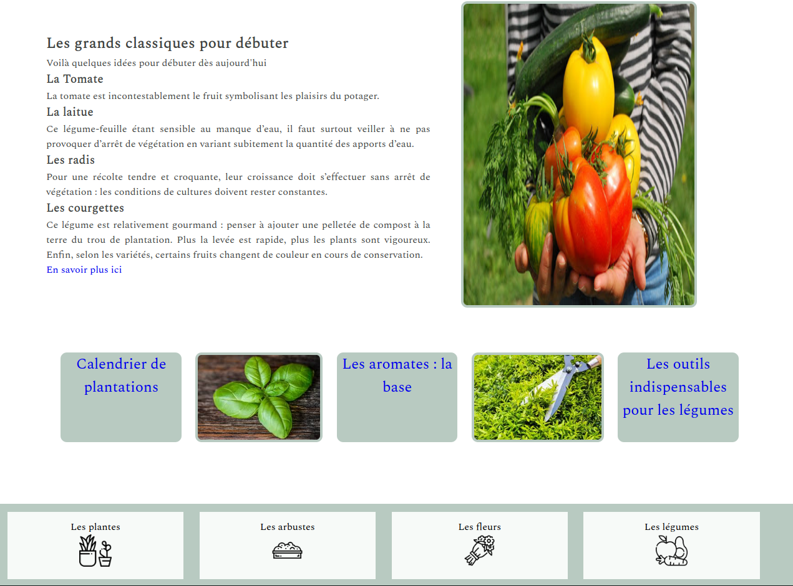
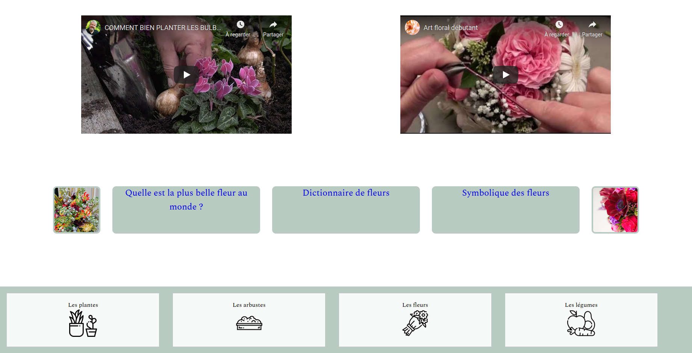
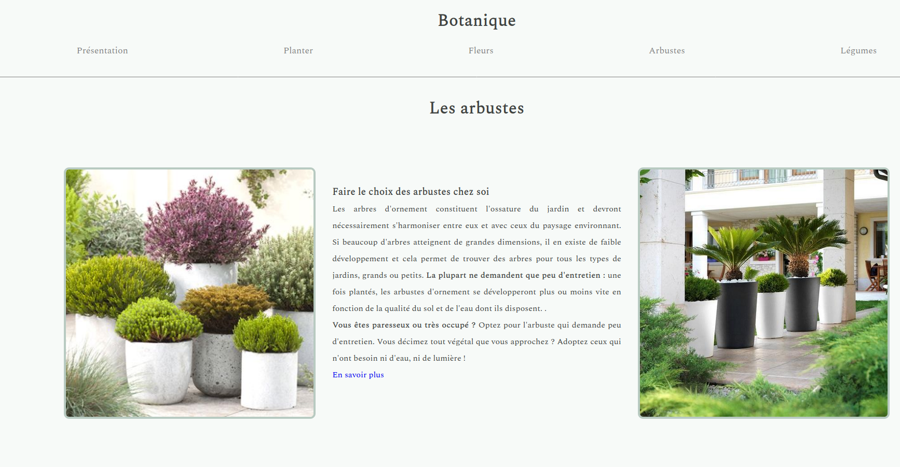

BOTANIQUE
Des conseils sur les plantations à réaliser en milieu urbain sont disponibles sur ce mini site. On y trouve
différentes catégories. Ce projet a été réalisé avec Cécile Wojnowski.



Des conseils sur les plantations à réaliser en milieu urbain sont disponibles sur ce mini site. On y trouve
différentes catégories. Ce projet a été réalisé avec Cécile Wojnowski.